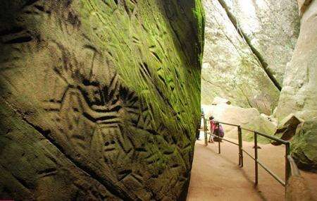
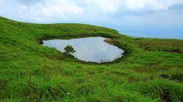

Edakkal Caves
Edakkal caves are well known for its pictorial depictions (cave art),
which are thought to be of 6000 B C. To achieve the hollows, one needs to trek through the Ambukutty Mala.
It will take around 45 minutes to climb the hill and you will never
get baffled in your outing to these historical caves & it is one of the famous places to see in Wayanad.
You can see animal figures and objects used by humans, on the walls of the caves.
1 / 3

2 / 3

Kuruva Island
A perfect blend of different natural colours makes Kuruva Island one of the best places to visit in Wayanad. It is a protected river delta with a number of islands over the middle of Kabini River, the famous east flowing river in Kerala. Natural lovers and adventure enthusiasts will find Kuruva Island the most suitable space for spending a quality time with their beloved ones or even alone.
A perfect blend of different natural colours makes Kuruva Island one of the best places to visit in Wayanad. It is a protected river delta with a number of islands over the middle of Kabini River, the famous east flowing river in Kerala. Natural lovers and adventure enthusiasts will find Kuruva Island the most suitable space for spending a quality time with their beloved ones or even alone.
3 / 3

Chembra Peak
Eight kilometres south of Kalpetta, close to the town of Meppady, lays the most elevated top in Wayanad. Chembra crest borders Nilgiri slopes in Tamil Nadu and Vallarimala in Kozhikode and it is one of the beautiful places to see in Wayanad. This place is a perfect goal for trekking exercises,There is a heart moulded lake. Climb up the rough landscapes of the Chembra Peak found 2,100 meters above ocean level on the southern piece of Wayanad. Chembra is the tallest peak in Wayanad and is a perfect zone for trekking.
Eight kilometres south of Kalpetta, close to the town of Meppady, lays the most elevated top in Wayanad. Chembra crest borders Nilgiri slopes in Tamil Nadu and Vallarimala in Kozhikode and it is one of the beautiful places to see in Wayanad. This place is a perfect goal for trekking exercises,There is a heart moulded lake. Climb up the rough landscapes of the Chembra Peak found 2,100 meters above ocean level on the southern piece of Wayanad. Chembra is the tallest peak in Wayanad and is a perfect zone for trekking.